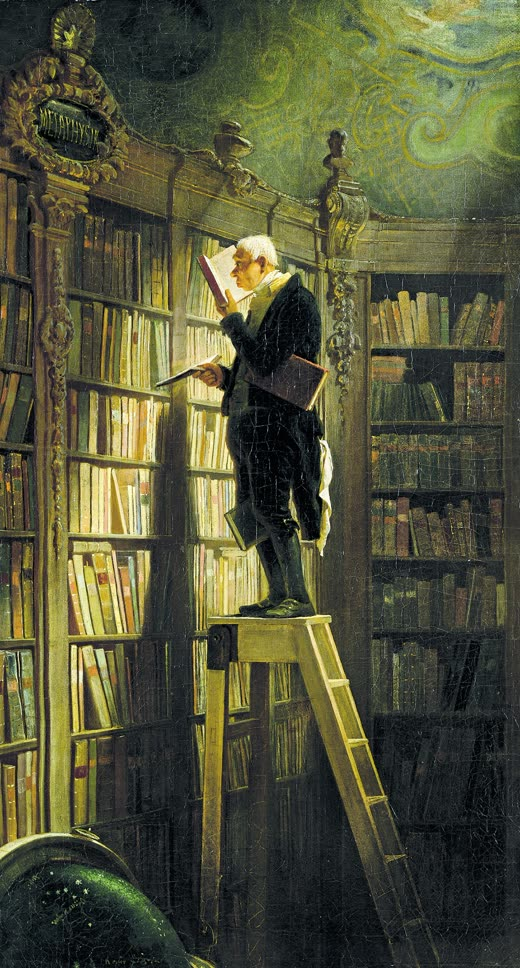
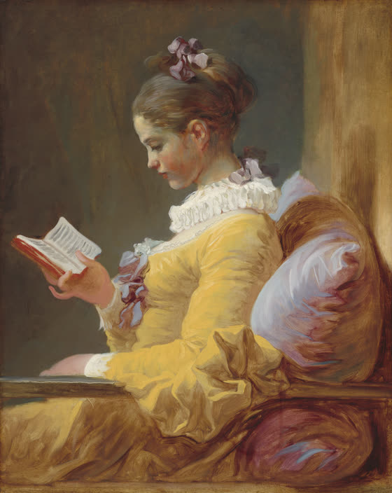

Open Margins
Free annotated editions of the classics
Classic books are free to read, but full of words, places, and references that modern readers don’t know. Open Margins sets a short note in the margin wherever you are likely to stop, so you can keep reading instead of searching.
The Library
Notes open under CC BY 4.0, and more books are in preparation
Take one down
Fewer people are reading
28% → 16%
of American adults read for pleasure on an average day, 2004 to 2023. That is a fall of about 3% every year for twenty years.
35% → 14%
of American 13-year-olds read for fun almost every day, 1984 to 2023. As late as 2012 it was 27%; in 2025 it was still 14%.
30 points
is roughly how much higher 13-year-olds who read for fun almost daily score on the national reading test than those who hardly ever do.
Sources: Bone, Bu, Sonke, and Fancourt, “The decline in reading for pleasure over 20 years of the American Time Use Survey,” iScience (2025); National Assessment of Educational Progress, Long-Term Trend results for age 13 (2023) and the 2025 results.
Why Open Margins
A lot of people aren’t reading classic literature these days, especially in high school and college. Yet reading trains us to think, to be articulate, and to understand other people better. And these works have faced intense selection pressure: only the works of the highest literary merit are still read today. Naturally, we can conclude that there must be something in these books that makes them worth reading.
Students now often turn to SparkNotes or LitCharts, which summarize the texts taught in schools. I think this is worsening people’s ability to read and think well. Part of the reason people turn to these tools is that reading the text by itself is difficult, so they take the easy way out.
Open Margins is meant to fix that: to give readers a smoother, more interactive experience with the classic texts themselves.
There must be something in these books that makes them worth reading.
How the notes work

There are four kinds.Notes come in four layers, each with its own printer’s mark in the margin: * vocabulary, † allusions, § history, ¶ places. You can also turn any layer off.
Annotations beside the text.Hover over an underlined phrase and its note appears in the margin beside it; click to keep it there with its source. Move the pointer into either margin to see every note on that side. On a phone, tap a phrase and the note opens below the paragraph.
Drafted by AI.Notes are drafted with AI and checked against the source each one cites, also by AI. A person has not reviewed them, so some will be wrong.
Free and open for all.Every note is released under CC BY 4.0. Teachers, students, and other projects may copy and reuse them with credit.
Type through
Copy it out.Every chapter (or part) has a Type button. It opens that section as a typing exercise: you type the text word for word, and the page waits for each right letter before it moves on. It keeps your place, your speed, and your accuracy.
Why.Typing practice is the small benefit. The real one is that copying is the slowest way to read: you cannot skim a sentence you have to rebuild letter by letter, so you feel every word the writer chose and the rhythm they are set in.
An old trick.As a young copy boy at Time, Hunter S. Thompson typed out pages of The Great Gatsby and A Farewell to Arms to learn what it felt like to write that way (Open Culture). This mode lets you do the same with the book in front of you.
You cannot skim a sentence you have to rebuild letter by letter.